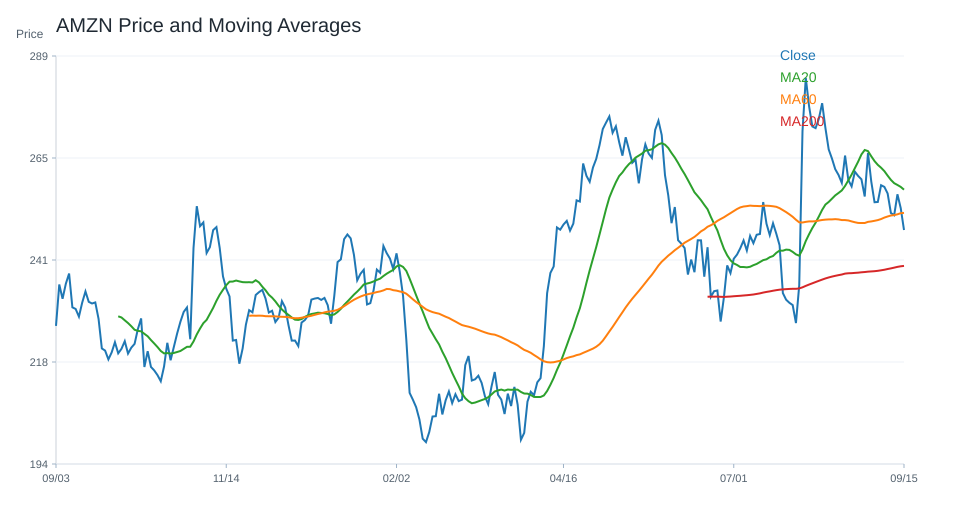
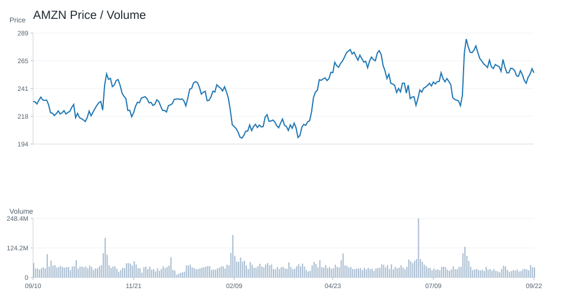
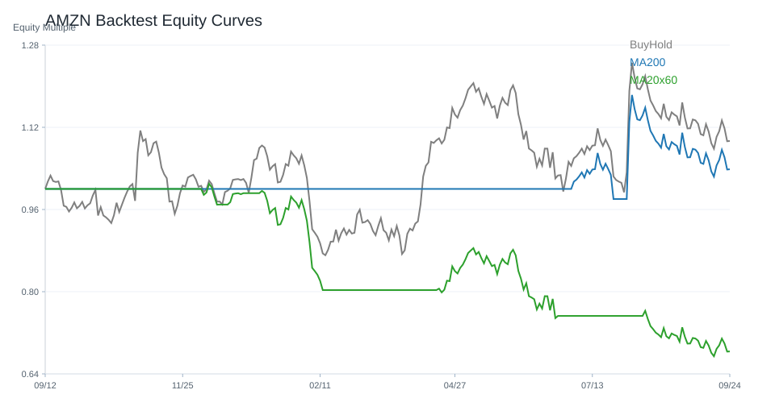

20 日
-2.94%60 日
13.52%研究訊號
強烈偏多市場資料
2026-07-02- 成交量48,246,400.00
- 20 日均線240.25
- 60 日均線253.33
- 200 日均線232.98
- 距 52 週高點-11.75%
- 距 52 週低點22.07%
技術指標
Python 計算- RSI1448.70
- MACD hist0.92
- KD K/D56.24 / 43.07
- ADX26.95
- 布林上緣252.34
- 布林下緣228.16
量價與事件
規則式分析- 量價型態量能中性
- 量價分數1
- 20 日量比0.76
- OBV 20 日變化18.69%
- 事件偏向事件中性
- 事件分數0
研究訊號
不是買賣建議強烈偏多，分數 7。
- 60 日趨勢偏強
- 站上 20 日均線
- 站上 200 日均線
- RSI 位於中性偏強區
- MACD histogram 為正
- KD 偏多但未過熱
- ADX 顯示趨勢強度較高
- 量價型態：量能中性
回測摘要
歷史資料研究| 策略 | CAGR | Sharpe | 最大回撤 | 勝率 | 交易次數 |
|---|---|---|---|---|---|
| 價格高於 200 日均線 | 10.22% | 0.52 | -26.88% | 51.57% | 12 |
| 20/60 日均線交叉 | 0.22% | 0.13 | -35.77% | 50.38% | 10 |
| 買進持有 | 20.59% | 0.72 | -43.49% | 52.31% | 1 |
圖表
價格 / 量價 / 回測AMZN

AMZN

AMZN
